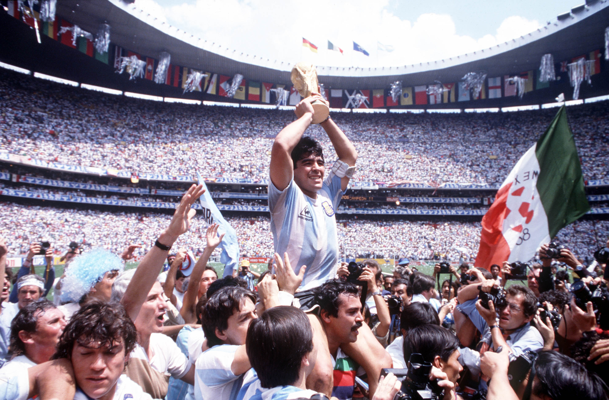

1930
En el año 1930 se disputó el primer Mundial de fútbol de la historia, que tuvo como sede Uruguay, que además sería el primer campeón del mundo de la historia, tras imponerse en la final a Argentina en el estadio Centenario de Montevideo.
- 4 - 2
1934
Italia también sería campeón al organizar el Mundial, en este caso el segundo de la historia. La Nazionale venció a Checoslovaquia con un gol de Angelo Schiavio en la prórroga.
- 2 - 1
1938
La selección italiana revalidaría el título mundial cuatro años después en Francia, venciendo en la final con autoridad a Hungría y convirtiéndose en el primer país en tener dos mundiales consecutivos.
- 4 - 2
1942 y 1946
La Segunda Guerra Mundial que se desarrolló en estos años obligó a que las citas previstas tanto para el año 1942 como para el 1946 no se llegaran a disputar.
- -
1950
El Mundial disputado en Brasil, dejó uno de los recuerdos más memorables de la historia de los Mundiales. Uruguay lograría su segundo galardón al imponerse a la Canarinha en la final disputada en el estadio de Maracaná. El llamado 'Maracanazo' todavía sigue siendo recordado por todos los aficionados al fútbol.
- 1 - 2
1954
Alemania lograría su primer Mundial en el año 1954, una cita disputada en Suiza, y lo hizo imponiéndose a la Hungría de Ferenc Puskas en una gran remontada. Los húngaros empezaron venciendo 0-2 en los primeros diez minutos, pero Alemania logró darle la vuelta al marcador para acabar venciendo.
- 3 - 2
1958
En Suecia, llegaría el primer Mundial de Brasil, país con más Campeonatos en la historia. La Canaricha evitó que Suecia, país anfitrión, lograra proclamarse campeón del mundo, y además lo hizo con un resultado contundente.
- 5 - 2
1962
En Chile, Brasil colocaría su segunda estrella de campeón en el escudo tras vencer en la final a Checoslovaquia, que tendría que conformarse con un nuevo subcampeonato, que se suma al que lograron en el año 1934.
- 3 - 1
1966
Inglaterra se convertiría en otro de los países capaces de convertirse en campeón del mundo jugando en casa. Los Tres Leones vencerían en una intensa final a Alemania en la prórroga en un escenario imponente como lo es Wembley.
- 4 - 2

1970
En el Mundial disputado en México, Brasil sería nuevamente la campeona, sumando tres mundiales en las últimas cuatro citas disputadas. En la final, celebrada en el estadio Azteca, la Canarinha pasó por encima de Italia. El Brasil del 70' siempre será considerado uno de los mejores equipos de la historia.
- 4 - 1
1974
Alemania albergaría el Mundial de este año y vería cómo su selección se convertiría en campeón del mundo por segunda vez en su historia al imponerse a la Holanda de Johan Cruyff, en un encuentro disputado en el Olímpico de Múnich.
- 2 - 1
1978
Argentina seguiría cuatro años después los pasos de Alemania, primero convirtiéndose en campeona del mundo en su casa, y segundo volviendo a dejar a Holanda con la miel en los labios en la final. El Monumental se vistió de Albiceleste.
- 3 - 1
1982
España, en el año 1982, vería cómo Italia se proclamaría campeón del mundo por tercera vez en su historia. La Nazionale vencería a Alemania en una final que se disputó en Madrid, en el estadio Santiago Bernabéu.
- 3 - 1

1986
México vivió el Mundial de Diego Armando Maradona, y obviamente su Argentina, que sería campeona del mundo tras imponerse en una gran final a Alemania. El '10' no marcó en la final, pero su torneo fue sencillamente sensacional, sobre todo su partido ante Inglaterra, que dejó uno de los mejores goles de la historia.
- 3 - 2
1990
Cuatro años después Alemania se tomaría la revancha contra Argentina, reeditando una final que se llevaría la Mannschaft , por la mínima, para proclamarse campeón del mundo por tercera vez en su historia. El solitario gol de Andreas Brehme sirvió para que, en el Olímpico de Roma, Alemania venciera nuevamente.
- 1 - 0
1994
Estados Unidos albergó por primera vez una cita mundialista. Brasil sería campeona del mundo por cuarta vez en su historia tras vencer a Italia en la tanda de penaltis. Roberto Baggio, con su penalti a las nubes, nos regalaría otra de las imágenes de la historia de los Mundiales.
- 0 (3) - (2) 0
1998
La Francia de Zinedine Zidane se convertiría en campeón del mundo por primera vez en su historia tras bordar el torneo, en el que además actuaban de local al ser sede. En la final, disputada en el Stade de France, Les Bleus arrollaron a Brasil.
- 3 - 0
2002
El primer Mundial disputado en suelo asiático dejó campeón a Brasil, nuevamente venciendo a Alemania, el combinado que mas finales ha disputado en la historia de los Mundiales. Ronaldo, se desquitaría con un doblete que valdría para que la Canarinha se convirtiera en pentacampeona en el estadio de Yokohama.
- 2 - 0
2006
Alemania albergaría un Mundial que quedaría marcado por dos hechos: la victoria de Italia y la retirada internacional de Zinedine Zidane, que sería expulsado en la final tras propinar un cabezazo a Marco Materazzi. La Nazionale sería tetracampeona del mundo tras imponerse a les Bleus en la tanda de penaltis.
- 1 (5) - (3) 1
2010
Sudáfrica viviría el fútbol total de la Selección Española, que se se proclamaría campeona del mundo por primera vez en su historia tras arrasar con su juego de toque que encandiló al mundo entero. La Roja se impuso en la prórroga, disputada en el Soccer City de Johannesburgo, a Holanda con un gol de Andrés Iniesta que ya es historia del deporte.
- 1 - 0
2014
Alemania, otra vez Alemania en una final. En esta ocasión para proclamarse campeona del mundo en El Maracaná por cuarta vez en su historia al vencer a Argentina, nuevamente, con un gol en la prórroga de Mario Götze. Lionel Messi, en una final discreta, perdería una ocasión de oro para alzar el Mundial.
- 0 - 1
2018
Francia logró su segundo título del mundo al vencer en la final a Croacia. El trabajo de los galos se sustentó de punta a punta: desde Hugo Lloris hasta Kilyan Mbappé, pasando por Ngolo Kanté, Paul Pogba o Antoine Griezmann. Veinte años después de ganar y organizar la cita de 1998, Les Bleus volvieron a festejar.
- 4 - 2
2022
Será la primera edición de la Copa del Mundo que se realice en el otoño correspondiente al hemisferio norte. El balón comenzará a rodar el 21 de noviembre y el 18 de diciembre conocermos al gran campeón!
- 4 - 2
2026
Por primera vez tres países organizarán una Copa del Mundo: Mexico - Estados Unidos - Canada y, además, habrá 48 equipos clasificados para disputar el Mundial en el continente americano. Sin duda será un torneo histórico.
- 4 - 2